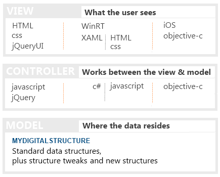

GETTING STARTED
MVC APP BUILDING OVERVIEW
This guide is aimed at developers new to building using MVC techniques or MVC in the context of mydigitalstructure.com.
MVC is an application architecture pattern that fits within the Separation of Concerns (SoC) philosophy and is made up of 3 layers:
- Model
The data structures and data - typically inside a database or in this case "inside" the mydigitalstructure.com service.
- View
The interface that the user sees and interacts with.
- Controller
This the layer that responds to the user actions and sends the "control" messages to the model, in this case the mydigitalstructure.com REST based API.
Each layer is independent of the other and the processes supporting each layer can be distributed eg some on a server and others on the client device.
As a developer using the mydigitalstructure.com REST API and associated pre-cooked Model, you are highly focused on the View and Controller layers. Particularly the View layer as this is a direct response to the users needs, where the Controller coding is a bi-product of these needs.
SOME TYPICAL OPTIONS FOR BUILDING THE VIEW & CONTROLLER LAYERS

BUILDING THE VIEW & CONTROLLER LAYERS USING A WEB-BROWSER AS THE CLIENT
In this section we'll describe how to use HTML/Javascript/jQuery to create the view and controller layers.
jQuery radically simplifies the application building process.
All interaction events are maintained in the Javascript files and the HTML is left purely for describing the elements ie tables - eg no "onClick=" type coding within the HTML.
The jQueryUI library is used to help build the buttons and other visual elements.
The typical pattern is:
| |
PROCESS |
EXAMPLE |
| 1 |
Create the visual user elements using HTML
This can be done statically using documents or programatically using Javascript, which is our preferred method and what the examples are based on - essentially the Controller layer is also creating the View as well as interacting the Model.
|
var aHTML = [];
aHTML.push(' [html] '); $('#divInterfaceViewport').html(aHTML.join(''));
|
| 2 |
Associate the user interactions/events to the elements
This can be done using the jQuery .click() type functions or the jQueryUI .button() type functions.
|
$('td.interfaceSearch').click(function(event)
{
interfaceSetupProjectTaskSearch(
event.target.id,
{source: 1}
);
});
|
| 3 |
Interaction with the model
This is the getting of data and the setting of data into the Model, which in this case uses the jQuery .ajax() function to interact with the mydigitalstructure.com REST API.
|
var sURL = '/ondemand/project/' +
'?method=PROJECT_TASK_SEARCH' +
'&id=' + giObjectContext;
$.ajax(
{
type: 'GET',
url: sURL,
dataType: 'json',
success: interfaceSetupProjectTaskShow
});
|
Check out the options for building with the mydigitalstructure.com REST webapi.
A video by Rob on essential development tools & other videos
Javascript libraries and some good reading
|